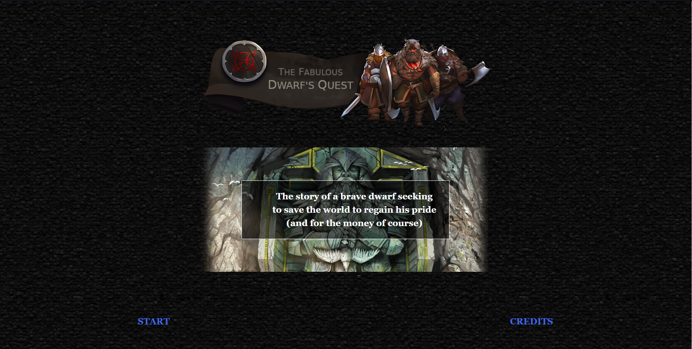

- The Fabulous Dwarf's Quest -

Context du projet
Le projet consiste à créer un jeu narratif en utilisant le moteur Twine. Les langages utilisés sont le Harlow, le CSS, le JavaScript et le HTML.
Notre jeu
Notre jeu raconte l'histoire d'un nain en quête de pouvoir et de richesse.
Il va entreprendre une aventure dans le but de tuer The Immortal Lord of Glangeduk,
un puissant sorcier qui a prit le pouvoir sur le monde il y a 5000 ans.
Le jeu est basé sur des choix que le joueur va devoir faire pour réussir la quête du protagoniste.
Le jeu est inspiré du Donjon de Naheulbeuk avec un univers de fantasy déjanté et un soupcon d'humour noir.'
Date de création du projet
Troisième projet fait lors de la troisième année au sein du Gaming Campus, bachelor informatique option jeux vidéo.
Equipe
L'equipe est composé de 3 développeurs en troisième année au Gaming Campus.
Liens vers la Build du jeu
Build
Cliquez ici pour jouer au jeu